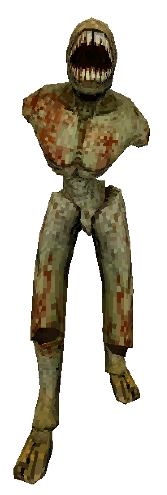
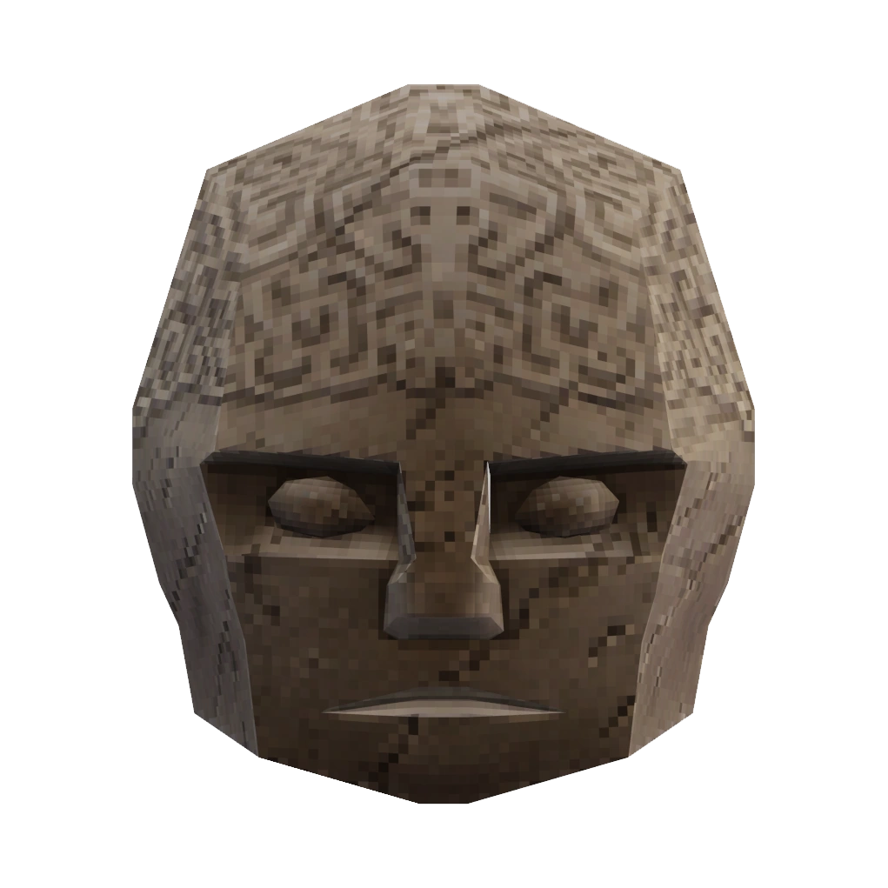

To progress in ULTRAKILL you must first march into hell and slaughter the denizens of the underworld. From the filth who achieved nothing in life to amalgamations of flesh and bone. ULTRAKILL is host to a wide varaity of enemies you must face, all of which will come at you with diffrent method of attacks. Here we will go over a view of the main enemies as well as bosses. To see the full list vist the Ultrakill Enemy List.
ENEMIES
Filth
The first and weakest enemy type you'll encounter in the game is known as the filth. as stated in the Ultrakill Wiki "Filth are emaciated humanoids that lack arms, eyes, and noses. Their only facial feature is a large gaping mouth lined with jagged teeth, used to bite and tear. Their flesh is greyish green, with dried blood covering their bodies." Only able to charge and lunge at the enemy, they are normally seen as blood bags or style points for the player to use.
Malicous Face
The first 'boss' enemy that the player will encounter takes the form of a large floating head that can shoot projectiles. Known by the playerbase by it's nickmane of 'Maurice', this enemy can prove a challenge in certain situations. 'Maurice' has two diffrent attack types, quick fire, where it unleashes a burst of weak projectiles, or a explosive burst which can deal high damage to the player. On top of all of that, this enemy is also immune to all explosive damage, which means certain weapons are completley off the table when matched agianst it.
Gaberial, Judge of Hell

While many other enemies appear as bosses in prior levels, most of them pale before the holy light off Gaberial, an angel of the lord who has taken over the position as Judge of Hell after killing the previous Judge, King Minos. Gaberial is the second boss in the game to be a roadblock for novice players as his fight requires a large amount of skill and a strong understanding of the games mechanics. Throughout the fight the player must dodge split second attacks, parry at the right time to refelct projectiles, and know when is the right time to sneak in to regain health through blood. And all of that is only for his first fight. Upon the defeat of Gaberial and compleation of Act 2 of the game, the player will get to have a rematch with this astounding boss.